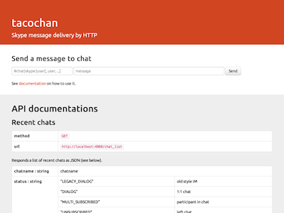

Takumi Akiyama a.k.a. akiym
tacochan is pretty cute. She can deliver Skype message by HTTP.

% cpanm App::Tacochan % tacochan starting httpd: http://127.0.0.1:4969/
Skype API wrapper for Perl
use strict;
use warnings;
use Skype::Any;
my $skype = Skype::Any->new();
$skype->message_received(sub {
my ($msg) = @_;
my $body = $msg->body;
if ($body eq 'ping') {
$msg->chat->send_message('pong');
}
});
$skype->run;
Yet another Base64?
use strict;
use warnings;
use utf8;
use Acme::Collector64;
my $japanese64 = Acme::Collector64->new(
index_table => 'あいうえおかきくけこさしすせそたちつてとなにぬねのはひふへほまみむめもらりるれろがぎぐげござじずぜぞばびぶべぼぱぴぷぺぽやゆよわ=',
);
$japanese64->encode('Hello, world!');
$japanese64->decode('てきにごふきやごけくほずへれぞりけち==');